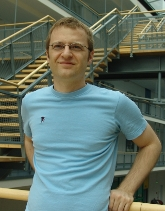

Home
Publications
Teaching
Recent Talks
Nominal Isabelle
Handy Information
People in Logic
Programming Languages
Miscellaneous
|
|
|
|
Christian UrbanE-mail christian.urban at kcl ac ukAddress Department of Informatics, King's College London, Bush House, 30 Aldwych, London WC2B 4BG, UK. My office is 7.07 on the 7th floor, North Wing, of the Bush House. |
 |
{kind=link}
 Isabelle Programming Tutorial (draft of a 200-page tutorial on Isabelle programming - updated to
Isabelle 2019 thanks to Norbert Schirmer)
Isabelle Programming Tutorial (draft of a 200-page tutorial on Isabelle programming - updated to
Isabelle 2019 thanks to Norbert Schirmer)
Past Positions In April 2006, I was awarded an Emmy-Noether fellowship, which I held at the TU Munich until September 2011. Between September 2008 and February 2009, I was an invited research scientist in the Department of Computer Science in Princeton. In 2004/05 I was an Alexander-von-Humboldt fellow in Munich and from 2000 until 2004 I was awarded a Research Fellowship in Cambridge. Before that I did my PhD in Cambridge funded by two scholarships from the German Academic Exchange Service (DAAD).
Skolem Award 2015 Together with Christine Tasson, I was awarded a Thoralf Skolem Award, a ten-year test-of-time award from CADE. This was for our paper on Nominal Techniques in Isabelle/HOL from 2005. The Skolem Award award was given also to Nicolaas de Bruijn, Zohar Manna, Moshe Vardi and Nachum Derschowitz, amongst others.
Research Interests theorem provers, verification, programming languages, compilers, algorithms, security, proof theory, type systems, concurrency, lambda calculus, unification, regular expressions, computability, complexity, functional and logic programming.
Teaching I usually enjoy teaching. At King's my students nominated me for the Teaching Excellence Award in 2012, 2015, 2016 and 2017, and for the best MSc Project supervisor in 2015. In 2014 I received both prizes for Best UG Project Supervisor and for Best MSc Project Supervisor in the NMS Faculty. In 2020/21, I was again nominated for the King's Education Award with a very kind citation from a student. Here is the citation from 2021/22. Another one for 2022/23. And the one for 2023/24.
Conferences UNIF'06 (member of PC), LFMTP'07 (member of PC), LFMTP'08 (PC co-chair), WMM'08 (member of PC), LSFA'08 (invited speaker), TAASN'09 (member of PC), LSFA'09 (member of PC), IDW'09 (organiser), WMM'09 (PC chair), TPHOLs'09 (PC co-chair), Automatheo'10 (member of PC), ITP'10 (member of PC), UNIF'10 (invited speaker), WMM'10 (invited speaker), IDW'10 (co-organiser), CPP'11 (member of PC), RTA'11 (member of PC), LFMTP'11 (member of PC), ITP'14 (member of PC), MKM'15 (member of PC), ITP'15 (PC co-chair), ITP'16 (member of PC) LSFA'17 (member of PC) ITP'17 (member of PC) ITP'19 (member of PC) IJCAR'20 (member of PC) ITP'21 (member of PC) CADE'21 (member of PC) ITP'24 (member of PC)
ITP'15 took place in Nanjing organised
by Xingyuan Zhang and me
Current PhD Meshal Nasser Binnasban
Former PhDs Fahad Ausaf (works at ARM in the VHDL compiler team); Chengsong Tan (postdoc at Imperial College, now works at Kaihong Digital verifying OSes)
Former RAs Chunhan Wu, Cezary Kaliszyk,
Julien Narboux
If I am not teaching or not doing any research, I am sometimes in the lavender fields of London, or I do model-shoots far away, or I am assistant to the resident chief paleontologist.
{kind=link}
{kind=link}
{kind=link}
{kind=link}
{kind=link}